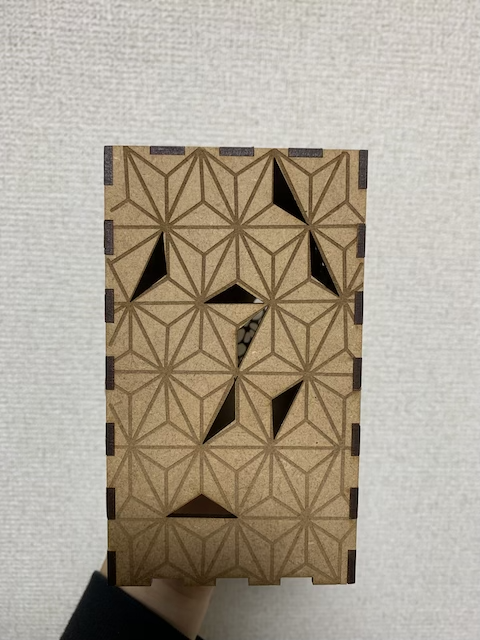

[ベットライト]
◯スケッチ
◯作品の画像

使用してみた
◯設計ファイル
dxfファイル
◯作品の説明
ちょうどベットライトが欲しいと考えていたため、作ろうと考えた。
自分の好きな自然と和を合わせたいと思い、このようなデザインにした。
◯失敗点
・箱の側面を和・自然・和・自然の交互にしたかったのだが、Fusion360からIllustratorへ移動させる際に間違えて画像を挿入してしまい、
順番がバラバラになってしまった。
・和柄の穴を開ける部分をランダムにしたのだが、規則的に穴を開ければよかった。
・完成して実際に使ってみたものがイメージと少し違ったため、しっかりと想像して作ることができていなかった。